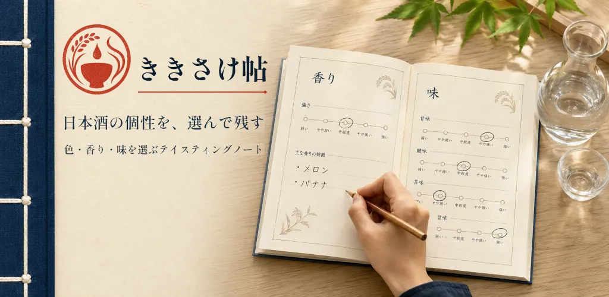
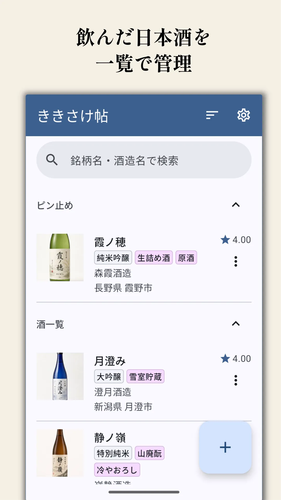
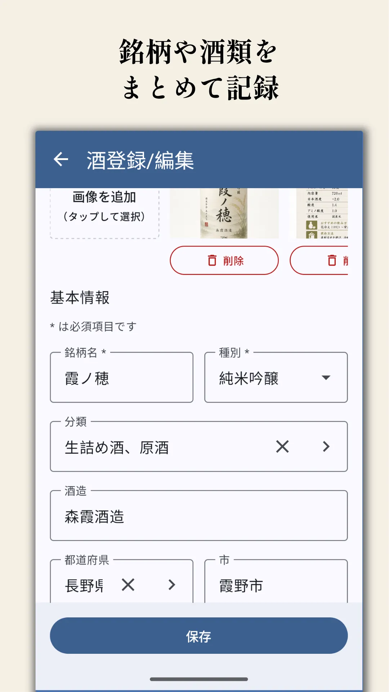
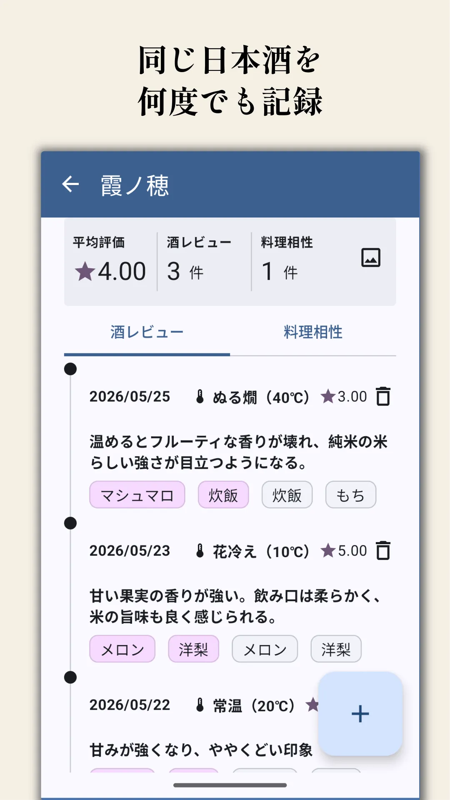
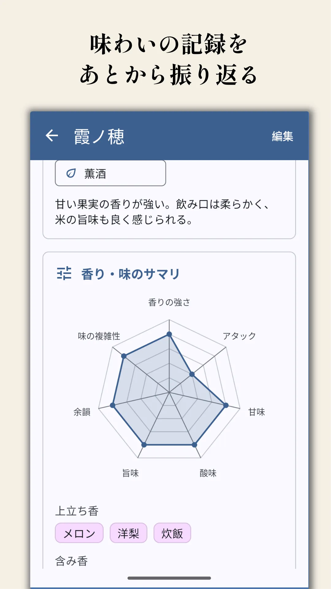
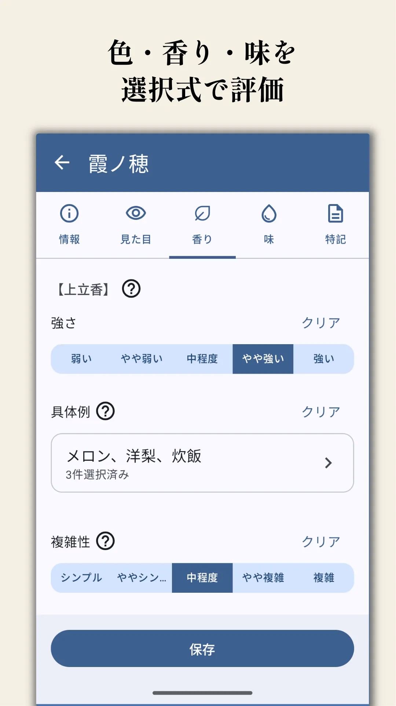

日本酒のテイスティングアプリ「ききさけ帖」を、公開前に試してくれる方を募集しています。
リリースに向けて、一緒に価値検証に参加し、初期版を育ててもらえると助かります。
このアプリでできること
「日本酒は好きだけど、どう評価したら良いか分からない」というユーザーの課題を解決するために、以下のような機能を提供します。
日本酒を記録
銘柄、酒類、酒造、画像などの基本情報を保存できます。
レビューを複数回保存
同じ日本酒でも、温度や場面ごとにレビューを残せます。
選択式で評価
色・香り・味を選ぶ形式にして、初心者でも記録しやすくします。





参加までの基本の流れ
うまく参加できない場合は、クローズドテスト参加ガイドをご覧ください。
事前準備: Gmailアドレスを連絡する
テスター登録のため、Google Playで使うGmailアドレスを収集フォームから開発者に共有します。
開発者がクローズドテストにGmailアドレスを登録した後、アプリのインストールが可能となります。開発者からの連絡をお待ちくださいませ。
開発者がクローズドテストにGmailアドレスを登録した後、アプリのインストールが可能となります。開発者からの連絡をお待ちくださいませ。
- 1. アプリをインストール Google Playのアプリページからアプリをインストールします。
- 2. opt-inの確認 参加リンクを確認し、テスター参加されていることを確認します。"You are a tester."となっていればOKです。
- 3. アプリを使う 日本酒の情報を登録し、色・香り・味を選び、飲んだ時の印象を記録します。
- 4. フィードバック送信 問題点や欲しい機能をフィードバックフォームから送信します。
参加時の注意事項
- 実際にお酒を飲まなくても、過去に飲んだときの印象を思い出しながら試してもらえれば大丈夫です。
- クローズドテスト終了まで、opt-inの状態 (アプリをインストールしたまま) にしておいてください。詳細は要件をご覧ください。
フィードバック観点
フィードバックの送り方
気づいたことは、Googleフォームで送ってください。LINEやメールでもOKです。細かく整理しなくて大丈夫です。
- どの画面か
- 何をしようとしたか
- 実際に何が起きたか
- （可能なら）スクリーンショットを添付
「この画面で迷った」「ここで保存できなかった」「この言葉が分からなかった」のように、そのまま書いてください。フィードバックは何度でも送れます。
まずはこれだけ
基本の流れと困ったところ
- アプリが起動できるか
- 日本酒を登録できるか/反映されるか
- レビューを登録できるか/反映されるか
- 操作中に迷うところがないか
- 落ちる、固まる、表示が崩れるなどの不具合がないか
余裕があれば 任意
- 色・香り・味の選び方が分かるか
- 専門用語が難しすぎないか
- ヘルプや説明が役に立つか
- 選択肢が多すぎないか、または足りないか
- 文字サイズ、余白、ボタン位置、一覧の見やすさに違和感がないか
- 入力が面倒すぎないか
- 2本目、3本目も登録したいと思えるか
- 家飲み、店飲み、イベント、旅行先などで使いやすいか
詳しく見られる方へ 任意
- 画像登録、編集、削除、再編集が期待通りに動くか
- バックアップ・復元機能は期待通りに動作するか
- 同じ日本酒に複数レビューを登録する流れが自然か
- 酒情報とレビュー情報が分かれている意味が伝わるか
- 温度、色、香り、味、酒類、分類などの用語に違和感がないか
- カメラ・画像選択などの権限要求が自然か
- 連続タップ、高速スワイプ、権限拒否、画像選択キャンセル、入力途中で戻る、端末回転、アプリ再起動時の挙動に問題がないか
- Androidアプリとして自然な見た目・操作感か
- Material Design 3 の観点で、色、余白、カード、FAB、ナビゲーション、ダイアログに違和感がないか
- 文字サイズ、コントラスト、タップ領域、片手操作、ダークモードに問題がないか
プライバシー
現バージョンでは、入力した日本酒情報、レビュー、画像は端末内に保存され、開発者のサーバーやクラウドには送信されません。